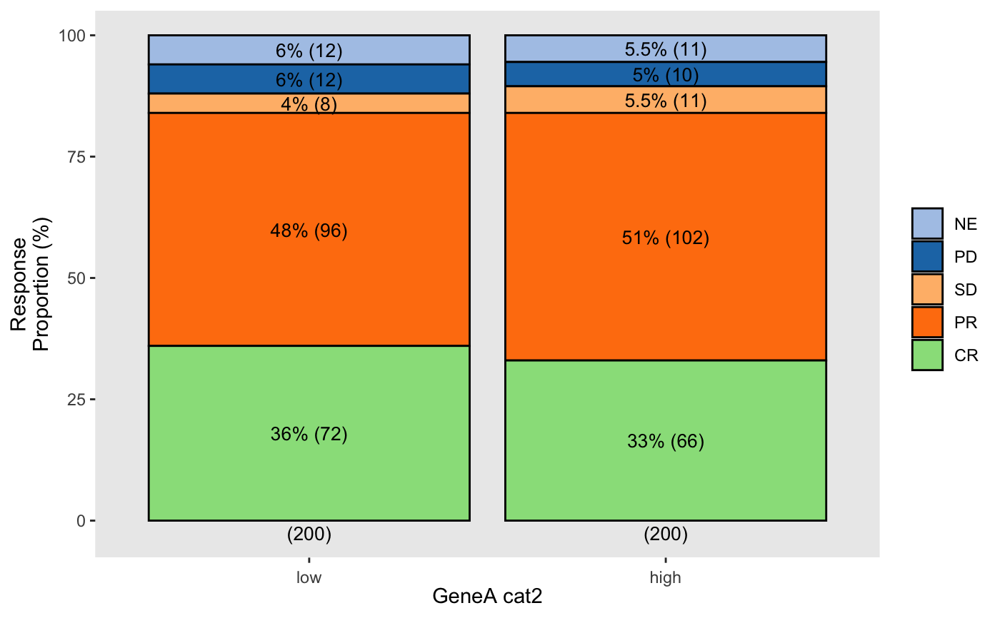

wrapper_core_bar_plot.RdGenerate a signle barplot.
wrapper_core_bar_plot( data, x_var, y_var, facet_var = NULL, colors_bar = NULL, variable_names = NULL, xlab = NULL, ylab = NULL, title = NULL, subtitle = NULL, legend_colors_title = NULL, legend_position = "right", facet_label_both = TRUE, skip_levels = NULL, method = "facet", show_proportions = TRUE, show_counts = TRUE, show_total_proportions = FALSE, show_total_counts = TRUE, label_size = 3.5, label_vjust = 0.5, title_size = 12, strip_text_size = NULL, facet_scales = "fixed", ylim = NULL, axis_text_x_angle = 0, axis_text_x_vjust = 0, axis_text_x_hjust = 0.5, background_grid_major = "none" ) wrapper_core_bar_plot_strat( data, x_var, y_var, facet_var = NULL, strat1_var = NULL, strat2_var = NULL, colors_bar = NULL, variable_names = NULL, xlab = NULL, ylab = NULL, title = NULL, strat1_label_both = TRUE, strat2_label_both = TRUE, legend_colors_title = NULL, legend_position = "right", facet_label_both = TRUE, skip_levels = NULL, method = "facet", show_proportions = TRUE, show_counts = TRUE, show_total_proportions = FALSE, show_total_counts = TRUE, label_size = 3.5, label_vjust = 0.5, title_size = 12, strip_text_size = NULL, facet_scales = "fixed", ylim = NULL, axis_text_x_angle = 0, axis_text_x_vjust = 0, axis_text_x_hjust = 0.5, background_grid_major = "none", strat_scales = "fixed", strat1_nrow = 1, strat1_ncol = NULL, strat2_nrow = NULL, strat2_ncol = 1, less_legends = FALSE )
| data | Data frame. |
|---|---|
| strat1_var | Name of the firts stratification variable. |
| strat2_var | Name of the second stratification variable. |
data(bdata) data <- bdata data$GeneA_cat2 <- cut_core_2groups(data$GeneA) x_var = "GeneA_cat2" y_var = "Response" wrapper_core_bar_plot(data = data, x_var = x_var, y_var = y_var)